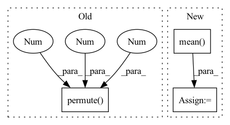

Pattern ID :2156
Before Change
// [N, K, M, H, W], [N, M, H, W]
contextLoss = F.cross_entropy(predict, c1)
// [n, m, h, w, k] -> [n, k, m, h, w]
l1, l2 = l1.permute( 0, 4 , 1 , 2, 3 ) , l2.permute(0, 4, 1, 2, 3)
// [N, K, M, H, W], [N, M, H, W]
// sum(-logP) / ()
bppLoss = (F.cross_entropy(l1, c1, reduction="mean") + F.cross_entropy(l2, c2, reduction="mean")) / math.log(2)After Change
prior1 = torch.distributions.Categorical(logits=torch.zeros_like(l1))
prior2 = torch.distributions.Categorical(logits=torch.zeros_like(l2))
reg = torch.distributions.kl_divergence(posterior1, prior1).mean() + torch.distributions.kl_divergence(posterior2, prior2).mean()
return ssimLoss, contextLoss, reg
In pattern: SUPERPATTERN
Frequency: 4
Non-data size: 3
Instances Fragment ID: 14014677
Project Name: xiaosu-zhu/mcquic
Commit Name: 3bc9fe6e9c9c8b767c920dcc9da256ef2c9749ef
Time: 2021-09-12
Author: xiaosu.zhu@outlook.com
File Name: src/mcqc/losses/quantization.py
M Class Name: CompressionLossBig
N Class Name: CompressionLossBig
M Method Name: forward(8)
N Method Name: forward(8)
M Parent Class: nn.Module
N Parent Class: nn.Module
M File Name: src/mcqc/losses/quantization.py
N File Name: src/mcqc/losses/quantization.py
M Start Line: 144
M End Line: 153
N Start Line: 144
N End Line: 164
Before Change
def forward(self, latents, codebooks, logits, codes):
loss = 0.0
for z, c, l, b in zip(latents, codebooks, logits, codes):
z = z.detach().permute(0 , 2 , 3 , 1)
k = l.shape[-1]
soft = l @ c
softQE = F.mse_loss(soft, z)
oneHot = F.one_hot(b, k).float()After Change
def forward(self, latents, zqs, softs):
loss = 0.0
for z, zq, soft in zip(latents, zqs, softs):
qe = F.mse_loss(z.detach(), zq, reduction="none").mean(axis=(0, 2))
commit = F.mse_loss(z, zq.detach(), reduction="none").mean(axis=(0, 2))
softQE = F.mse_loss(z.detach(), soft, reduction="none").mean(axis=(0, 2))
softCommit = F.mse_loss(z, soft.detach(), reduction="none").mean(axis=(0, 2))
// joint = F.mse_loss(soft, zq, reduction="none").mean(axis=(0, 2))
loss += qe + 0.01 * commit + 0.1 * (softQE + 0.01 * softCommit)
return loss
class CompressionLoss(nn.Module): Fragment ID: 14015188
Project Name: xiaosu-zhu/mcquic
Commit Name: 163d9bc5bb4d433d52358cf5c7abc5955136f574
Time: 2021-02-25
Author: xiaosu.zhu@outlook.com
File Name: src/mcqc/losses/structural.py
M Class Name: QError
N Class Name: QError
M Method Name: forward(4)
N Method Name: forward(5)
M Parent Class: nn.Module
N Parent Class: nn.Module
M File Name: src/mcqc/losses/structural.py
N File Name: src/mcqc/losses/structural.py
M Start Line: 11
M End Line: 21
N Start Line: 12
N End Line: 19
Before Change
def forward(self, x, device, info=None):
extra info is not used here
x = x.permute(0 , 2 , 1 ) // Permute to channel first
o = self.network(x)
o = o.permute(0, 2, 1) // Permute to channel last
return oAfter Change
cur_x = cur_x.permute(0, 2, 1) // Permute to channel first
o = self.network(cur_x)
o = o.permute(0, 2, 1) // Permute to channel last
out[:, cur_time, :] = torch.mean( o, dim=1)
return out
Fragment ID: 14014612
Project Name: yhzhu99/covid-ehr-benchmarks
Commit Name: 0aa43aa6600f3932ca2ffb844677f3d9544a3e9e
Time: 2022-07-28
Author: yhzhu99@gmail.com
File Name: app/models/backbones/tcn.py
M Class Name: TemporalConvNet
N Class Name: TemporalConvNet
M Method Name: forward(4)
N Method Name: forward(4)
M Parent Class: nn.Module
N Parent Class: nn.Module
M File Name: app/models/backbones/tcn.py
N File Name: app/models/backbones/tcn.py
M Start Line: 147
M End Line: 150
N Start Line: 149
N End Line: 157
Before Change
:param input: An float tensor with shape of [batch_size, seq_len, embed_size]
:return: An float tensor with shape of [batch_size, latent_variable_size]
input = input.permute(0 , 2 , 1 )
result = self.cnn(input)
return result.squeeze(2)
After Change
input = input.transpose(1, 2).contiguous()
output = self.cnn(input)
output = torch.mean( output, dim=-1)
return output
Fragment ID: 14014673
Project Name: rucaibox/textbox
Commit Name: 967fc58bc72f549bde3d8cba8dcd88b0bd40e138
Time: 2020-12-06
Author: lijunyi@ruc.edu.cn
File Name: textbox/module/Encoder/cnn_encoder.py
M Class Name: HybridEncoder
N Class Name: BasicCNNEncoder
M Method Name: forward(2)
N Method Name: forward(2)
M Parent Class: nn.Module
N Parent Class: nn.Module
M File Name: textbox/module/Encoder/cnn_encoder.py
N File Name: textbox/module/Encoder/cnn_encoder.py
M Start Line: 45
M End Line: 47
N Start Line: 45
N End Line: 48